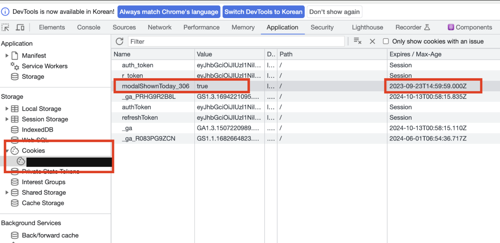
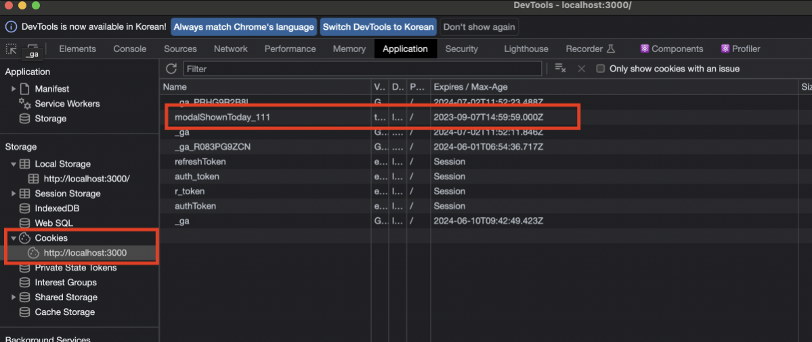

웹 브라우저에서 데이터를 저장 하고 관리하는 저장소에는 쿠키, 로컬스토리지, 세션스토리지
1. 쿠키(Cookies)

쿠키는 클라이언트, 즉 사용자의 웹 브라우저에 데이터를 저장하는 매커니즘으로 클라이언트와 서버간의 상태를 유지하고 웹 사이트에서 사용자 데이터를 저장하기 위해 사용된다.
key=value 쌍으로 이루어져 있으며 각 쌍은 ; 로 구분
💡 HTTP 쿠키(웹 쿠키, 브라우저 쿠키)는 서버가 사용자의 웹 브라우저에 전송하는 작은 데이터 조각입니다.
브라우저는 그 데이터 조각들을 저장해 놓았다가, 동일한 서버에 재 요청 시 저장된 데이터를 함께 전송합니다.
쿠키는 두 요청이 동일한 브라우저에서 들어왔는지 아닌지를 판단할 때 주로 사용합니다.
이를 이용하면 사용자의 로그인 상태를 유지할 수 있습니다.
상태가 없는(stateless) HTTP 프로토콜에서 상태 정보를 기억 시켜주기 때문입니다.
- 작은 용량 및 크기 제한
- 쿠키는 보통 작은 양의 데이터를 저장하는데 사용된다.
- 4KB의 데이터 크기 제한이 있는데, 서버에 요청을 보낼때마다 함께 전송되기 때문에 브라우저와 서버 간의 트래픽을 최소화하기 위함이다
- 도메인 및 경로 제한
- 쿠키는
path나domain옵션으로 특정 도메인 혹은 경로 제한을 설정할 수 있으며, 설정하면 쿠키를 설정한 도메인과 경로에서만 사용할수 있다. - 예를 들어
naver.com도메인에서 설정한 쿠키는naver.com하위 경로에서만 접근이 가능하다.
path=/admin domain=naver.com위와 같이 접근 가능한 path와 domain을 설정하면,
'/admin','naver.com'을 포함한 하위 경로 페이지에서는 해당 쿠키에 접근이 가능하지만 다른 domain이나 path에서는 쿠키에 접근이 불가하게 된다. - 쿠키는
- 만료 날짜 설정
- 쿠키는 직접 만료 날짜를 설정하여 얼마동안 유지할 수 있다. 날짜를 설정해주지 않으면 세션 쿠키로 간주되어 브라우저가 종료될 때 삭제된다.
- 쿠키의 만료날짜는 반드시 GMT(Greenwich Mean Time) 포맷으로 설정되어야 하고,
data.toUTCString을 사용해서 해당 포맷으로 쉽게 변경이 가능하다.// 지금으로부터 하루 후 let date = new Date(Date.now() + 86400e3); date = date.toUTCString(); document.cookie = "user=Jelly; expires=" + date; - Expires : 쿠키의 만료날짜를 설정하는데 사용되며, 설정하지 않으면 브라우저를 닫을때 쿠키가 만료된다.
document.cookie = "username=Jelly; expires=Sun, 10 Oct 2023 14:00:00 UTC; path=/"; - max-age
- 해당 속성은
Expires의 대안으로, 쿠키가 만료되어야 하는 시간을 초 단위로 설정할 수 있다. - 현재 시간으로부터 쿠키가 몇 초 후에 만료되어야 하는지를 지정하며 이 속성은 브라우저 시스템 시간 변경과 관계없이 정확한 시간을 기반으로 쿠키가 만료된다.
- 만약 0이나 음수 값을 지정하면 쿠키는 바로 삭제된다
// 1시간 뒤 쿠키 삭제 document.cookie = "user=Jelly; max-age=3600"; // 만료 기간을 0으로 지정하여 쿠키를 바로 삭제 document.cookie = "user=Jelly; max-age=0";
- 해당 속성은
- 보안에 주의할 것
- 쿠키는 클라이언트에 저장되므로 보안에 주의해야 하며, 비밀번호와 같은 민감한 정보는 HTTPS와 같이 암호화된 프로토콜을 이용하여 데이터를 전송하는게 안전하다
그래서 쿠키는 어떻게 저장할까?
실제로 실무에서 쿠키를 사용했던 예시를 가져와 기록하려고 한다.
상품 이용기간중 미납이 있는 고객에게 하루에 1번 서비스 이용료를 납부하라는 팝업을 띄우는 작업이 필요했고, 오늘밤 자정에 만료되는 쿠키 를 저장해서 하루에 한번만 독촉 할 수 있도록 했다. 😅
프로세스는 다음과 같다.
- 로그인시 쿠키가 저장되어 있는지 확인
- 쿠키가 있으면 팝업 X, 없으면 이용료 안내창을 띄운 뒤 오늘 자정까지 유효한 쿠키를 저장한다.
- 쿠키는 자정이 지나면 만료되어 삭제된다.
setCookie 함수
interface CookieOptions {
path: string;
domain: string;
expires: Date | string;
'max-age': number;
samesite: string;
secure: boolean;
httpOnly: true;
}
const setCookie = (name: string, value: string, options: Partial<CookieOptions> = {}): void => {
options = {
path: '/',
...options,
};
if (options.expires instanceof Date) {
options.expires = options.expires.toUTCString();
}
let updatedCookie = encodeURIComponent(name) + '=' + encodeURIComponent(value);
for (const optionKey in options) {
updatedCookie += '; ' + optionKey;
const optionValue = options[optionKey as keyof CookieOptions];
if (optionValue !== true) {
updatedCookie += '=' + optionValue;
}
}
document.cookie = updatedCookie;
};setCookie함수를 작성한 뒤 쿠키를 저장할때마다 간편하게 사용할 수 있다.
(getCookie, deleteCookie 함수도 각각 만들어서 관리했지만 이 글에서는 생략했다.)
// ... 생략
const today = new Date();
const expirationDate = new Date(today.getFullYear(), today.getMonth(), today.getDate(), 23, 59, 59);
expirationDate.setMilliseconds(999);
setCookie(`modalShownToday_${userInfo.center_id}`, 'true', { expires: expirationDate });쿠키를 저장하는 부분만 가져와봤다. 이런식으로 setCookie 함수를 이용해 등록하고자 하는 name을 입력해주고 필요한 옵션(expires)을 위와 같은 방법으로 넘겨주면, 오늘 자정까지만 유효한 쿠키가 생성된다.

웹 저장소 정보는 Application 탭에서 확인이 가능하다.
미납 계정으로 로그인 시 처음엔 쿠키가 없기 때문에 팝업이 노출됐고, 팝업이 노출됨과 동시에 modalShownToday_111 이라는 쿠키가 저장된 것을 확인할 수 있다.
Expires 옵션도 지정해 줬기 때문에, 등록되어 있는 시간을 현재시간으로 변환해보면 23시 59분 59초로 지정된것을 확인할 수 있었고 이렇게 간단히 하루에 한번만 뜨는 기능을 구현할 수 있었다.
🤷🏻♂️ 왜 하필 쿠키를 사용했음?
하루에 한번만 계속 띄워야 할때는 쿠키, 입금 완료 후 최초 1번만 띄울때는 로컬스토리지를 사용해서 구현했는데,
쿠키는 만료일을 직접 지정 가능하기 때문에 하루에 한번만 노출되도록 관리하기가 용이하다.
하지만 로컬스토리지는 같은 기능을 구현할수는 있지만 기본적으로 영구적으로 저장되는 데이터이기 때문에 쿠키처럼 만료일을 지정하는 옵션도 없고, 일정 시간 뒤 삭제하는 로직을 구현하기가 조금 더 복잡해진다.
2. 로컬 스토리지(Local Storage)
로컬스토리지는 웹 브라우저에 데이터를 저장하고 관리할 수 있는 웹 스토리지 객체로, 브라우저 내에 키, 값 쌍을 저장할 수 있게 해준다
- key-value 쌍으로 데이터 저장
- key, value 모두 문자열이여야 한다.
- 그렇기 때문에 값으로 어떤 타입의 데이터(number, object)를 넣더라도 모두 문자열로 변환된다.
localStorage.setItem('name', 'jelly') localStorage.setItem('age', 27) // 문자열로 반환 localStorage.getItem('name') // jelly localStorage.removeItem('name') // name 로컬스토리지 삭제 localStorage.clear() // 모든 데이터 삭제
- 영구적인 데이터 저장 및 용량
- 로컬 스토리지에 저장된 데이터는 영구적으로 저장되기 때문에 브라우저를 종료하더라도 계속 남아있다.
- 4kb의 용량제한이 있었던 쿠키와 다르게 로컬 스토리지는 보통 5MB ~ 10MB의 용량 제한이 있어, 비교적 넉넉하고, 키 - 값을 저장하기에 부족하지 않은 용량이다.
- 로컬스토리지로 딱 1번만 뜨는 팝업 구현하기
실무에서 사용자가 상품을 구매하고 입금을 완료했을 경우, 최초 로그인 딱 한번만 '서비스 정식 가입이 완료되었습니다' 라는 팝업을 띄워야 했다.
이를 위해 서버측에서 is_first 라는 키값을 로그인시에 넘겨주었고, 최초 로그인시에는 이 값이 0 이고 그 후 로그인시에는 자동으로 1로 바뀌도록 설정되어 분기처리를 진행했다.
하지만 재로그인 하기 전까지 is_first 키는 0에서 변하지 않기 때문에, 메인페이지로 이동할때마다 해당 문구가 노출되었고 이를 방지하기 위해 팝업이 1회 노출되면 유저 아이디가 담긴 고유 키값을 로컬스토리지에 저장한 뒤, 로그아웃할 때 삭제해주는 방식으로 구현했다.
useEffect(() => {
const isFirstPopupShown = localStorage.getItem('isFirstPopupShown');
if (!isFirstPopupShown && userInfo.is_first === 1) {
openModalAlert('서비스 정식 가입이 완료되었습니다.');
localStorage.setItem('isFirstPopupShown', 'true');
}
}, [userInfo]);3. 세션 스토리지(Session Storage)
세션스토리지도 로컬스토리지와 마찬가지로 웹 스토리지 객체이다. 로컬스토리지에서 설명했던 메서드를 동일하게 사용할 수 있다.
setItem(key, value): 값 저장getItem(key): 값 불러오기removeItem(key): 해당 키의 데이터 제거clear(): 모든 스토리지 데이터 삭제
또한, 클라이언트 측에 데이터가 저장되기 때문에 서버와 통신 없이 데이터를 읽고 쓸 수 있다.
용량도 로컬스토리지와 동일하게 5MB ~ 10MB 정도의 용량 제한이 있다.
⭐ 세션스토리지는 브라우저 탭에 종속된다.
세션스토리지의 데이터는 새로고침해도 유지된다. 하지만 세션스토리지는 브라우저 탭에도 종속되어 있기 때문에 origin이 같아도 다른 탭을 열어 데이터를 확인하려고 하면 null 을 반환한다.
그렇다면 로컬스토리지와의 차이는?
데이터 보관 기간에 가장 큰 차이가 있다. 로컬스토리지는 브라우저를 종요해도 데이터가 영구적으로 남아있지만, 세션스토리지는 브라우저가 종료되는 즉시 데이터가 삭제된다.
즉, 브라우저 세션이 유지되는 동안에만 유효하며 주로 짧은 생명주기를 가지는 장바구니, 임시 데이터 등의 데이터들을 저장할때 사용된다.